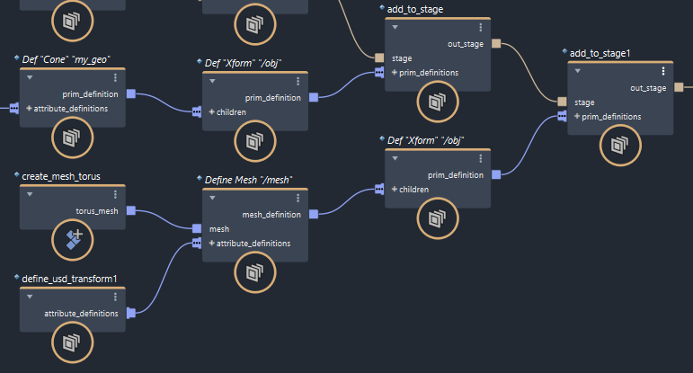

在 Maya 中快速熟悉 Bifrost-USD
请按照本教程快速熟悉 Bifrost-USD 的基础知识。
有关 USD 的一般详细信息，请参见 Pixar 的 USD 文档，特别是术语和概念词汇表。有关 Maya 中 USD 的信息，请参见 Maya 版本文档中适用于 Maya 的 USD 部分。
在图表中创建后台文件
在新图表中，添加 add_to_stage 节点。
将鼠标指针悬停在 prim_definitions 端口上 - 它需要一个或多个 Object 类型的输入。
数据类型 Object 用于 Bifrost 中的许多内容，例如几何体、模拟设置集合等。但是，对于此节点，只有包含 USD 基本体“模板”的对象用作输入才有意义。此类对象可由许多高级 Bifrost-USD 节点输出，例如 define_usd_prim。
现在，将指针悬停在 out_stage 端口上。它是 BifrostUsd::Stage 类型的对象。
BifrostUsd 命名空间中的类型包含 Bifrost“包裹器”中的 USD 数据，它允许在 Bifrost 图表中连接这些类型。低级 Bifrost-USD 节点使用这些类型，而不是包含模板的 Bifrost 对象。
现在，将 out_stage 端口连接到 output 节点。将在场景中创建 mayaUsdProxy 节点和形状。仅在创建新后台文件输出时自动创建这些节点和形状，并表示 Maya 的后台文件版本。
您可以在 Maya 的大纲视图中显示形状以查看层级。Maya USD 代理形状没有子对象，因为该后台文件仍为空。
如果查看 Maya 的 USD 层编辑器，您可以看到 Bifrost中的后台文件已命名为 bifrost.usd，并且它作为子层包含在 Maya 后台文件的不可共享层中。当 Bifrost 按步骤重建后台文件时，这会保留您在 Maya 中所做的任何修改（例如，移动 Bifrost 后台文件的任何内容） - 有关可共享和不可共享层如何工作的详细信息，请参见与适用于 Maya 的 USD 共享层。

在 unshareableLayer 上单击鼠标右键，然后选择“打印到脚本编辑器”(Print to Script Editor)，然后打开 Maya 的脚本编辑器。层的内容列在历史窗格的底部，如本示例所示：
// USD Layer identifier: anon:0000014B314F2B60:unshareableLayer
// Real Path:
// #sdf 1.4.32
// (
// customLayerData = {
// string[] mayaSharedLayers = ["anon:0000014B1D7313D0:bifrost.usd"]
// }
// subLayers = [
// @anon:0000014B1D7313D0:bifrost.usd@
// ]
// )
// 在本例中，层标识符为 anon:0000014B314F2B60:unshareableLayer。
anon意味着这是一个匿名层 - 它存在于内存中，而不是作为磁盘上的单独文件。- 该编号是在运行时自动生成的哈希，可能会更改。当加载了多个匿名层时，它用于区别这些匿名层。
- 最后一部分是可读标记，用于在 Maya 的 USD 层编辑器中显示。
在不可共享层的内容中，您可以看到在 Bifrost 中创建的后台文件如何作为子层包含在内。它也是匿名的 - 尽管您稍后会将后台文件从 Bifrost 保存到磁盘，但 Bifrost-USD 和适用于 Maya 的 USD 始终通过内存中的副本进行连接。customLayerData 与适用于 Maya 的 USD 和 Bifrost-USD 如何协同工作有关，可以忽略。
将基本体添加到后台文件
到目前为止，Bifrost 后台文件为空，因此请添加一些基本体来测试一切的运行情况。在 prim_definitions 端口上单击鼠标右键，然后选择“创建节点 > USD::Prim::define_usd_prim”(Create Node > USD::Prim::define_usd_prim)。
这将在后台文件上创建基本体 - 默认情况下，它称为 obj，其类型为 Xform（变换）。
通常的做法是将其他基本体分组到变换下，以便可以在主场景或其他层中轻松地移动它们。在大纲视图中展开 Maya USD 代理，以查看层级中的变换。
要在变换下添加一些几何体，请在 children 端口上单击鼠标右键，然后再次选择“创建节点 > USD::Prim::define_usd_prim”(Create Node > USD::Prim::define_usd_prim)。这次，将 Path 更改为类似“/my_geo”的名称。请注意，在本例中，您不需要前导斜杠，因为它将添加为子项，并且其路径将自动附加到其父项的路径。但是，始终可以安全地包含前导斜杠。
此外，将 Type 更改为“圆锥体”。最后，后台文件中有一些几何体。
请注意，Cone 只是 USD 中可用的隐式形状基本体类型之一。有关其他基本 USD 类型的列表，请查看“信息”选项卡中的说明。要查看已注册用于 Maya USD 版本的所有类型，请在大纲视图中的 Maya USD 代理形状上单击鼠标右键，然后展开“添加新基本体 > 全部已注册”(Add New Prim > All Registered)。
添加属性
圆锥体目前侧放。要将其竖放，可以在 Maya 视口中选择并旋转它，但最好在图表中按步骤执行此操作。我们不要修改 obj 变换，而是将属性添加到圆锥体。
在第二个 define_usd_prim 节点的 attribute_definitions 端口上单击鼠标右键，然后选择“创建节点 > Usd::Attribute::define_usd_transform”(Create Node > Usd::Attribute::define_usd_transform)。输入 –90 的 X 轴旋转，使圆锥体直立。

在层中工作
到目前为止，您创建了一个后台文件，添加了几个基本体，并定义了一个属性。但是，USD 的要点是使用层来更好地管理资产和高效地协作。
在 add_to_stage 节点的 stage 端口上单击鼠标右键，然后选择“创建节点> Usd::Stage::create_usd_stage”(Create Node > Usd::Stage::create_usd_stage)。单击节点参数中的 Layer 文件夹图标，导航到您拥有写入权限的目录，然后输入文件的名称，例如“my_stage.usda”。请注意，该文件不会立即保存，但将由下游 save_usd_stage 节点使用（除非覆盖该节点中的文件名）。这个简单示例使用 ASCII 文件格式 (.usda)，使您能够在文本编辑器中轻松检查内容，但是，对于实际工作，最好使用二进制 crate 格式（.usd 或 .usdc）来提高性能和效率。
在 Maya 的 USD 层编辑器中，默认名称 bifrost.usd 已替换为文件名称。
如果您有要使用的 USD 文件，可以将其添加为后台文件的子层。例如，如果要处理角色效果，则可能需要为布景、布局、道具、角色、动画等加载层。但是，如果仅处理环境效果，则可能只需要用于布景和布局的层。
在本示例中，从头开始创建新层。在 sublayers 端口上单击鼠标右键，然后选择“创建节点 > Usd::Layer::create_usd_layer”(Create Node > Usd::Layer::create_usd_layer)。同样，单击 Layer 文件夹图标，导航到所需的文件夹，然后输入文件名，如“my_layer.usda”。
请注意，在 Maya 的 USD 层编辑器中，my_layer 现在显示为 my_stage 的子层。
将基本体添加到子层
在第一个节点和 output 节点之间呈菊花链状连接另一个 add_to_stage 节点。在 prim_definitions 端口上单击鼠标右键，然后选择“创建节点 > USD::Prim::define_usd_prim”(Create Node > USD::Prim::define_usd_prim)，以添加另一个变换。在 children 节点上单击鼠标右键，然后选择“创建节点 > USD::Prim::define_usd_mesh”(Create Node > USD::Prim::define_usd_mesh)。
对于网格数据，可以按常规方式将 Maya 网格拖动到图表中。在本示例中，将 create_mesh_torus 添加到图表，并将其输出连接到 define_usd_mesh 节点的 mesh 输入。如果需要，可以使用属性移动它，使其不与圆锥体重叠。

在 Maya 的 USD 层编辑器中，在 my_layer.usda 上单击鼠标右键，然后选择“打印到脚本编辑器”(Print to Script Editor)。在 Maya 的脚本编辑器中，您可以看到 my_layer 为空。这是因为默认情况下网格已添加到 my_stage 的根层。
要解决此问题，请单击第二个 add_to_stage 节点。在“参数编辑器”中，将层索引从 –1 更改为 0。使用脚本编辑器确认网格现在位于 my_layer 中。
层是有序的，其中 –1 表示根层，0 表示底部子层，依此类推。请注意，在 Bifrost-USD 中，第一个子层（索引 0）包含最弱的观点，这与使用 USD Python 或 C++ API 时子层的索引方式相反。层的标识符字符串无法使用，因为哈希编号可能会改变。
在 Maya 的大纲视图中，您可以看到圆锥体和网格共享相同的变换。这是因为您未更改网格父变换的默认路径。层级是由 USD 后台文件组成的，其中的数据可以来自任何层，并引用其他层中的数据。
选择网格定义的下游变换定义，并将它的 Path 更改为“/torus”。在这种情况下，斜杠字符是必填的，因为它没有自己的父项。
保存层
要保存到目前为止的工作，请连接最后一个 add_to_stage 节点和 output 之间的 save_usd_stage 节点。

您可以忽略其 File 参数，这便于快速测试和诊断。如果为空，则节点将使用设置为上游的文件名保存所有修改的层。
默认情况下，save_usd_stage 节点未启用。这样可避免在修改图表时持续重新保存。准备好保存层之后，请打开 Enable，然后再次关闭。
在外部文本编辑器中打开文件，验证它们是否包含应包含的内容。文件 my_layer.usda 具有变换和子网格，my_stage.usda 具有对 my_layer.usda 文件的引用以及变换和它的子圆锥体。
另请注意，后台文件实际上是一个层。文件可以作为层或后台文件加载到另一个图表中，或者加载到支持 USD 的任何应用程序中。